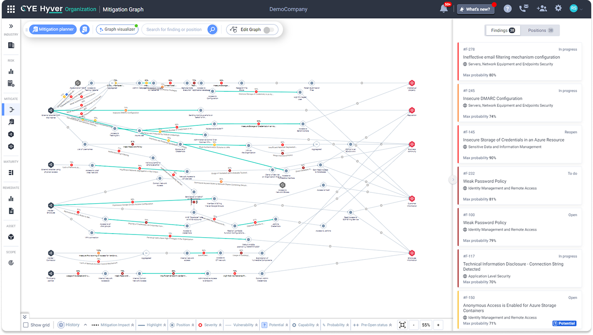
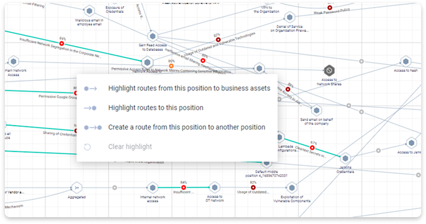
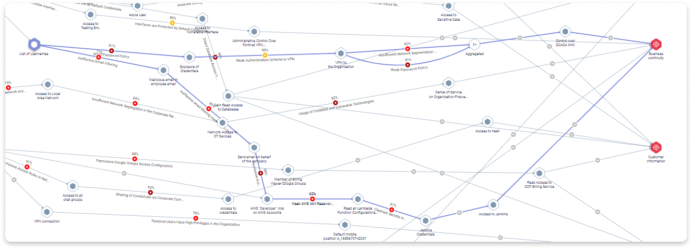
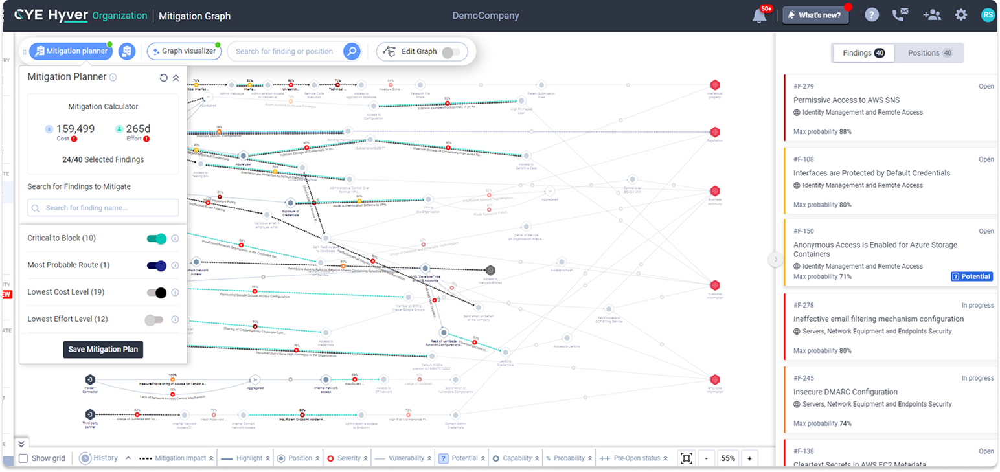
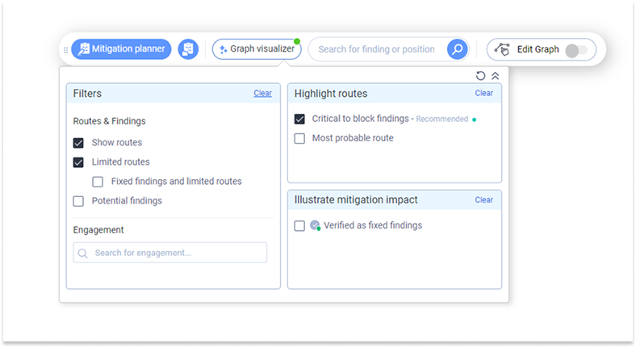
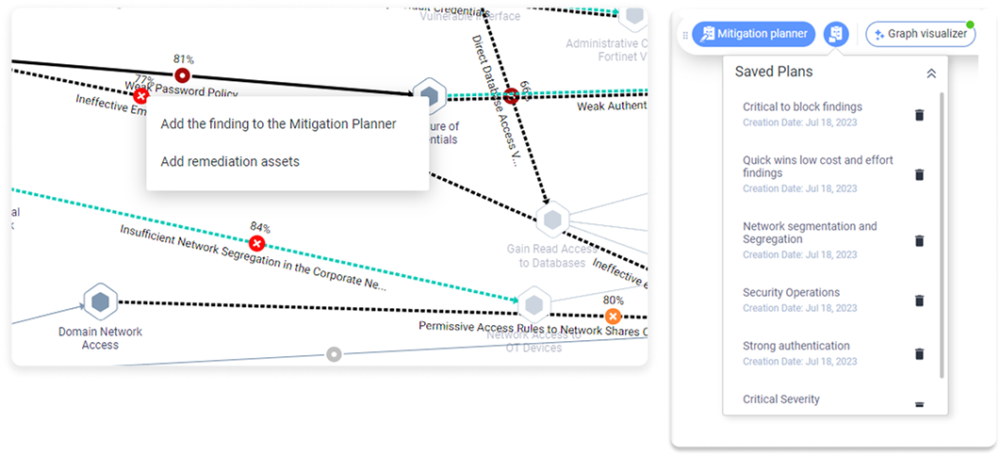
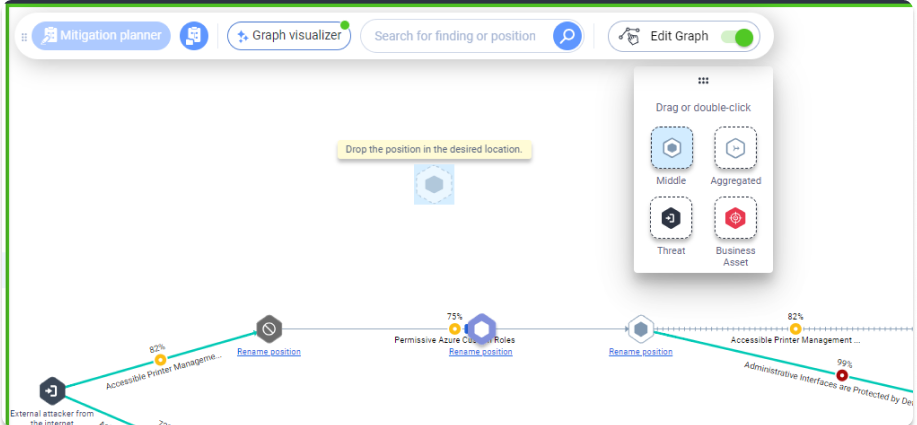
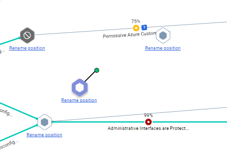

Attack Route Visualization
Value at a Glance
Identify and analyze potential threats to your organization
Assess how likely your cyber vulnerabilities are to be exploited
Get a company-wide mapped view of all risk types, including internet-facing assets, cloud services, on-premises access, and vendors
Personas
- CISO
- C-level management
- Organizational decision-makers

Challenge: Show only what matters
Every vulnerability or asset in the attack graph can have many properties attached to it. This creates noise that distracts users from the issues that need immediate attention.
The Solution
We built a system of highlights and filters, both pre-configured and user-triggered, so users can focus on what matters most to them.




Challenge: I understand the problem. What do I do next?
Once users identify the vulnerabilities they want to address based on the attack graph data, they need to start the mitigation process. Our goal is to guide them in selecting vulnerabilities and incorporating them into a work plan.
The Solution
With the plan calculator, users can add or remove vulnerabilities from a simulation plan. They can also preview how the plan will affect their department's budget, the predicted improvement in the attack graph, and the estimated implementation time.
Once satisfied with the simulation, users can save the plan and sync it with their ticketing system (e.g., Jira) to track mitigation progress and its impact on the organization's risk and maturity.

Challenge: Your system missed vulnerabilities in my business. Can I centralize everything in one place?
Despite many integrations, our platform cannot discover all data. Customers typically use around 20 security tools at once. To prioritize all vulnerabilities correctly, they need to be consolidated in a single place. We needed to let users add vulnerabilities and assets manually so stakeholders get an accurate picture of the situation.

